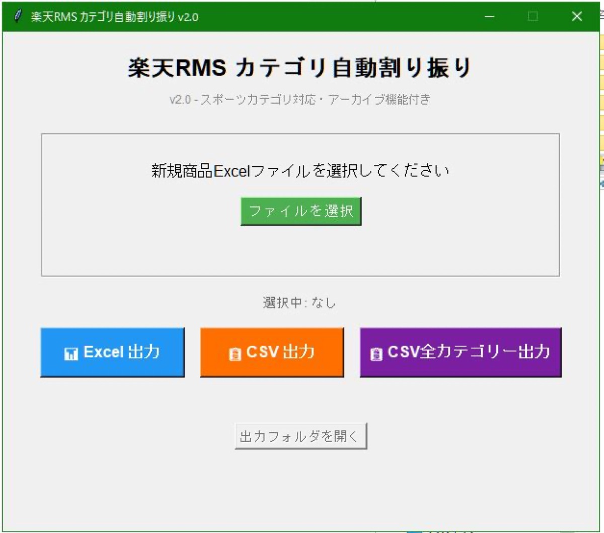

CASE 01
商品カテゴリ登録の自動化 — 30分の手作業を1分に
- 課題
- 商品ごとのカテゴリ登録が手作業で1回30分。判断基準が属人化し、人によって分類がブレていた。
- 取り組み
- ブランドごとの分類ルールをExcelマスタとして整備し、商品情報からカテゴリを自動判定。登録用CSVまで一気通貫で出力するツールを自作。入力チェックと処理後の自動採点・修正ループも組み込んだ。
- 成果
- 作業時間 30分 → 1分。基準が「ツールとマスタ」に残るため、誰が使っても同じ品質で登録できる。
カテゴリ登録 1回あたり
30分→1分
RMSカテゴリ情報の自動取得
4,144件・複数店舗一括
